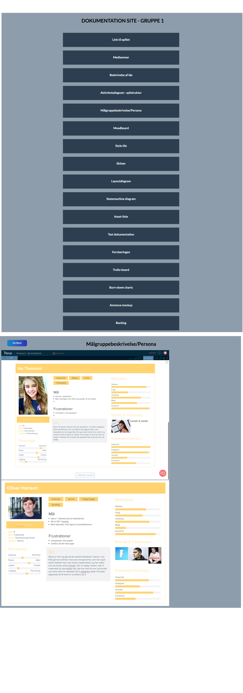
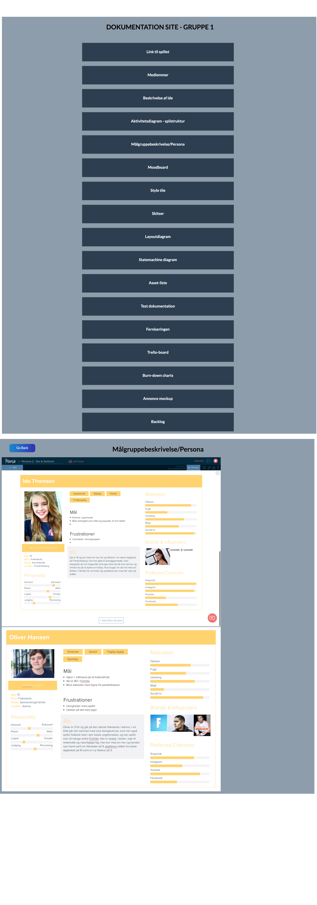

Denne opgave er lavet i Tema 03 - Grundlæggende animation. Opgaven indeholder et spil lavet for Sex & Samfund, spillet er lavet i grupper af 4 medlemmer.
At forstå og få erfaring med animationsteknikker både visuelt og teknisk.
At få forståelse for og erfaring med implementering af animationsteknikker på websites.
At få forståelse for og erfaring med processtyring og projektplanlægning, samt at arbejde og interagere med en kunde.
I dette projekt skulle vi arbejde med en ekstern kunde, i denne opgave var kunden Sex og Samfund og deres side projekt privatsnak.dk. Her fik vi til opgave at designe samt kode et til spil i målgruppen 13 -15 år i grupper af 4-5 medlemmer, min gruppe bestod af 4 medlemmer. Til starte med blev vi introduceret for projektstyringsværktøjet SCRUM, dette bruge vi igennem hele projekt til at holde styr på vores tasks. Dette gjorde vi ved at bruge systemet trello.com, vi startede ud at lave 5 kategori, “to-do”, “doing”, “stuck” og “done”. Dette hjalp os med at se hvor langt vi var med projektet og om der var nogen udfordringer der holdt os tilbage. På den måde kunne vi nemt effektivisere vores arbejdsprocess.
Da vi blev færdige med at kode spillet, fandt vi fire testpersoner i mulgruppen 13 - 15 år. Vi lavede en 5-sekunder samt et semi-struktureret interview. Testresultaterne viste os tydeligt både gode ting ved spillet samt de udfordringer vores testpersoner oplevede ved at prøve spillet. Efterfølgende lavede vi så de fornødne ændringer på spillet og var nu klar til ferniseringen.
Til vores fernisering af spillet fik vi besøg af to 8.klasser fra Nørrebro, de kom fordi for at besøge hver gruppe, se deres spil og bedømme det. Til ferniseringen havde vi sat en skål op sammen med en papir blok, her kunne eleverne bedømme vores spil fra 1-10 samt tilføje en kommentar hvis nødvendigt. Vi fik her testet vores spil hos målgruppen og ville i praksis kunne bruge resultaterne til revurdering af vores spil.
Vi lavede et dokumentationssite indeholdende al vores for-analyse, design og et link til det færdige spil.
I dette forløb fungerede samarbejdet mellem min gruppe og jeg desværre ikke optimalt, vi dårlige til at kommunikere og vores arbejdsmoral matchede ikke.
Dette gav også nogle problemer i forhold til de ting vi havde aftalt i gruppekontrakten. Jeg har fra dette projekt lært hvor vigtigt det er at man fra starten i projekt, allerede i gruppekontrakter, bliver enige om hvor høj arbejdsmoralen er igennem projektet, så man ikke oplever lign. problematikker.
Adobe Illustrator
Adobe Photoshop
Brackets
FileZilla
Git - Github.com
Trello.com
 
